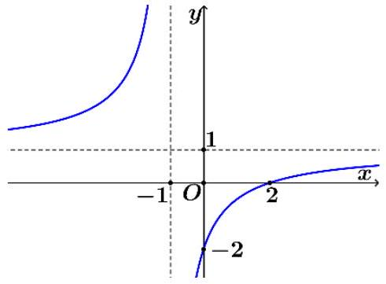
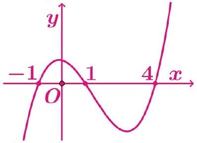
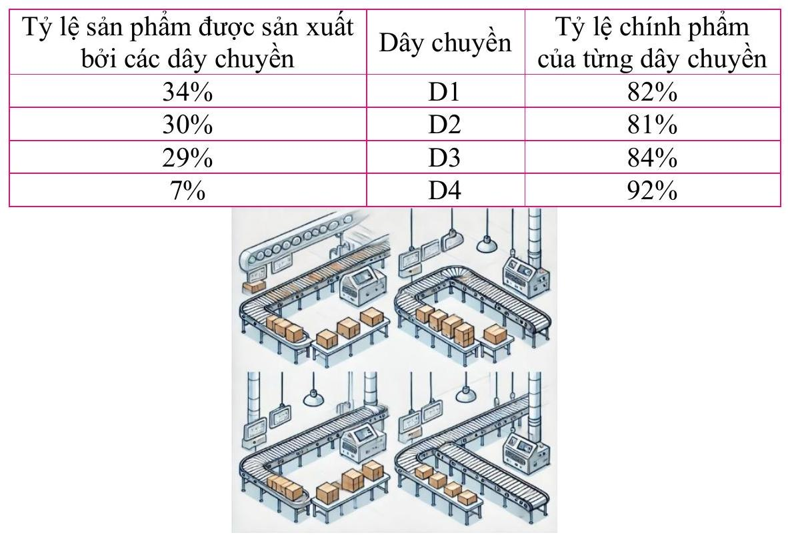
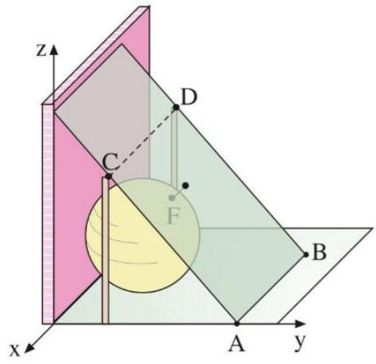
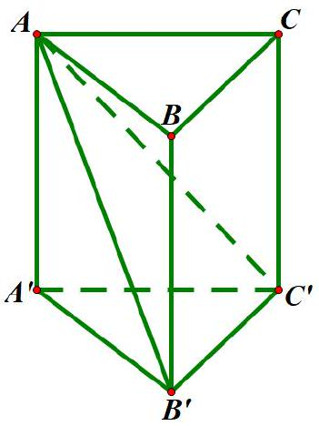
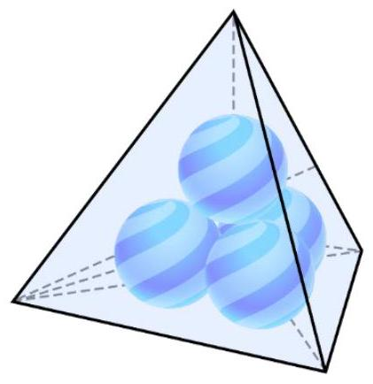
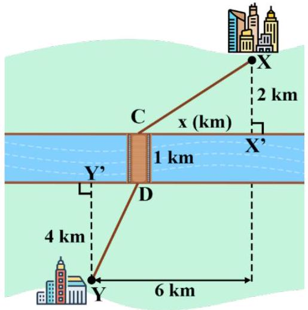
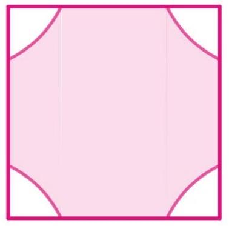
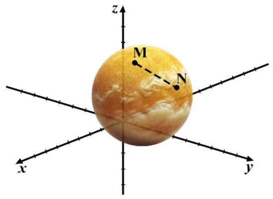
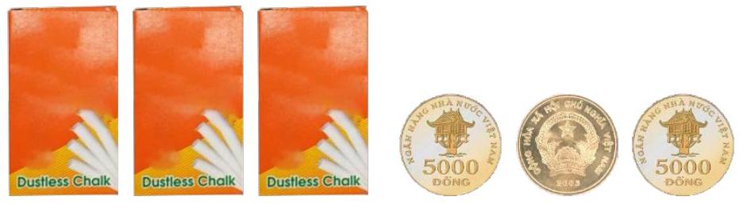

Câu 1. Cho hàm số \( y = \frac{a x + b}{c x + d} \) có đồ thị là đường cong trong hình vẽ.

Tọa độ giao điểm của đồ thị hàm số đã cho với trục tung là
Câu 2. Tìm đạo hàm của hàm số \( y = \log x \).
Câu 3. Trong không gian \( Oxyz \), cho \( A(11 ; 22 ; -3) \). Hình chiếu của \( A \) lên trục \( Oy \) có tọa độ là
Câu 4. Cho cấp số nhân \( \left(u_n\right) \) với \( u_1 = 2 \) và công bội \( q = \frac{1}{5} \). Giá trị của \( u_4 \) bằng
Câu 5. Nguyên hàm của hàm số \( f(x) = 2^x + x \) là:
Câu 6. Trong không gian \( Oxyz \), cho mặt cầu \( (S): x^2 + y^2 + z^2 - 8x + 10y - 6z + 49 = 0 \). Tính bán kính \( R \) của mặt cầu \( (S) \).
Câu 7. Thể tích của khối tròn xoay thu được khi quay hình phẳng giới hạn bởi các đường \( y = -x^2 + 3x \) và \( y = 0 \) quanh trục \( Ox \) bằng
Câu 8. Tích tất cả các nghiệm của phương trình \( \log_2^2 x - 2 \log_2 x + 7 = 5 \log_2 x - 2 \) bằng
Câu 9. Chọn ngẫu nhiên đồng thời hai số từ tập hợp gồm 17 số nguyên dương đầu tiên. Xác suất để chọn được hai số chẵn bằng
Câu 10. Trong không gian với hệ tọa độ \( Oxyz \), cho điểm \( M(3 ; 2 ; 1) \). Mặt phẳng \( (P) \) đi qua \( M \) và cắt các trục tọa độ \( Ox, Oy, Oz \) lần lượt tại các điểm \( A, B, C \) không trùng với gốc tọa độ sao cho \( M \) là trực tâm tam giác \( ABC \). Xác định phương trình mặt phẳng \( (P) \).
Câu 11. Cho hàm số \( y = f(x) \) xác định trên \( \mathbb{R} \) và có đạo hàm \( f^{\prime}(x) = \left(e^x - 1\right)\left(x^2 - x\right) \forall x \in \mathbb{R} \). Số điểm cực trị của hàm số đã cho là:
Câu 12. Cho hình chóp \( S.ABC \) có \( SA = SB = SC = a \), \( \widehat{ASC} = \widehat{CSB} = 60^\circ \), \( \widehat{ASB} = 90^\circ \). Khoảng cách từ \( A \) đến \( (SBC) \) bằng
Câu 13. Cho hàm số \( y = f(x) \) có đạo hàm liên tục trên \( \mathbb{R} \). Hàm số \( y = f^{\prime}(x) \) có đồ thị như sau:

Câu 14. Chi phí nhiên liệu của một con tàu chạy trên sông được chia làm hai phần. Phần thứ nhất không phụ thuộc vào vận tốc và bằng 480 nghìn đồng trên 1 giờ. Phần thứ hai tỉ lệ thuận với lũy thừa ba của vận tốc, khi \( v = 10(\mathrm{km/h}) \) thì chi phí nhiên liệu phần thứ hai bằng 30 nghìn đồng/giờ. Gọi \( x(\mathrm{km/h}) \) là vận tốc của tàu.
Câu 15. Một nhà máy có 4 dây chuyền cùng sản xuất một loại sản phẩm. Bảng số liệu sau thống kê kết quả kiểm tra nhà máy đó, bao gồm tỷ lệ sản phẩm của nhà máy được sản xuất bởi các dây chuyền và tỷ lệ chính phẩm (đạt) cho từng loại dây chuyền:

Câu 16. Một bình chứa khí hình cầu \( K \) (đường kính \( 10 \mathrm{~m} \)) chạm trực tiếp vào mặt bức tường thẳng đứng tại điểm \( T(-6 ; 0 ; 5) \). Mặt tấm chắn được cố định xuống đất tại các điểm \( A(0 ; 16,25 ; 0), B(-12 ; 16,25 ; 0) \) và tại các điểm \( C(0 ; 5 ; 15), D(-12 ; 5 ; 15) \) được đỡ bằng các thanh chống thẳng đứng.
Câu 17. Cho hình lăng trụ đứng \( ABC.A^{\prime}B^{\prime}C^{\prime} \) có đáy \( ABC \) là tam giác vuông, \( AB=BC=1 \). Biết rằng góc giữa hai mặt phẳng \( (ACC^{\prime}) \) và \( (AB^{\prime}C^{\prime}) \) bằng \( 60^\circ \). Tính thể tích khối chóp \( B^{\prime}.ACC^{\prime}A^{\prime} \) (kết quả làm tròn đến hàng phần trăm).
Câu 18. Người ta dùng thủy tinh trong suốt để làm một cái chặn giấy hình tứ diện đều. Để trang trí cho nó, người thiết kế đặt trong khối tứ diện 4 quả cầu nhựa có bán kính bằng nhau là \( r=\sqrt{2} \) (cm). Biết rằng 4 quả cầu này đôi một tiếp xúc với nhau và mỗi mặt của tứ diện tiếp xúc với 3 quả cầu, đồng thời không cắt quả cầu còn lại. Nếu bỏ qua bề dày của các mặt thì lượng thủy tinh cần dùng để làm chặn giấy trên bằng bao nhiêu \( \mathrm{cm}^3 \) (kết quả làm tròn tới hàng phần chục).
Câu 19. Một con đường cần được xây dựng giữa hai thành phố \( X \) và \( Y \) nằm ở hai bên đối diện của một con sông có chiều rộng đều \( 1 \mathrm{~km} \). \( X \) cách sông \( 2 \mathrm{~km} \) và \( Y \) cách sông \( 4 \mathrm{~km} \), khoảng cách giữa hai thành phố theo phương song song với bờ sông là \( 6 \mathrm{~km} \). Một cây cầu sẽ được xây dựng để cho phép giao thông đi qua sông. Vị trí của cây cầu \( CD \) cách \( XX^{\prime} \) là \( x \mathrm{~km} \). Tìm \( x \) để con đường cần được xây dựng giữa hai thành phố \( X \) và \( Y \) được ngắn nhất.
Câu 20. Người ta thiết kế một mẫu gạch lát nền nhà có dạng hình vuông cạnh \( 4 \mathrm{dm} \). Bốn góc viên gạch viên màu trắng, phần ở giữa màu hồng. Đường viền của phần màu trắng bao gồm bốn đoạn thẳng nằm trên các cạnh hình vuông và bốn đường cong có tính chất: Tích khoảng cách từ một điểm bất kì thuộc đường cong đó đến hai trục đối xứng của viên gạch (hai đường thẳng đi qua tâm viên gạch và lần lượt song song với hai cạnh vuông góc) bằng \( 2 \mathrm{dm}^2 \). Tính diện tích phần màu hồng, đơn vị \( \mathrm{dm}^2 \) (làm tròn kết quả đến hàng phần mười).
Câu 21. Trong hệ mặt trời, bán kính trung bình của Sao Kim gần bằng \( 6000 \mathrm{~km} \), điều này làm cho Sao Kim có kích thước gần tương đương với Trái Đất (bán kính trung bình của Trái Đất là \( 6371 \mathrm{~km} \)). Trên bề mặt Sao Kim có 2 điểm \( M \) và \( N \) mà độ dài \( MN=10000 \mathrm{~km} \). Xét không gian \( Oxyz \), với mỗi đơn vị trên hệ trục tọa độ có độ dài \( 1000 \mathrm{~km} \), Sao Kim có thể coi là một khối cầu có tâm \( I(0 ; 3 ; 4) \). Tìm giá trị nhỏ nhất của \( T=OM^2-ON^2 \) (đơn vị: Megamet (Mm), biết \( 1 \mathrm{Mm}=1000 \mathrm{~km} \)).
Câu 22. Có 3 hộp phấn. Hộp thứ nhất có 7 viên trắng và 3 viên vàng; hộp thứ hai có 16 viên trắng và 4 viên vàng; hộp thứ ba có 22 viên trắng và 8 viên vàng. Ta tung đồng thời 3 đồng xu cân đối và đồng chất: nếu được cả 3 mặt sấp thì chọn hộp thứ nhất; nếu được 1 mặt sấp và 2 mặt ngửa thì chọn hộp thứ hai; các trường hợp còn lại thì chọn hộp thứ ba. Từ hộp đã chọn ta lấy ngẫu nhiên ra 1 viên phấn. Tính xác suất để lấy được viên phấn trắng (kết quả làm tròn đến hàng phần trăm).
Nhập họ và tên: